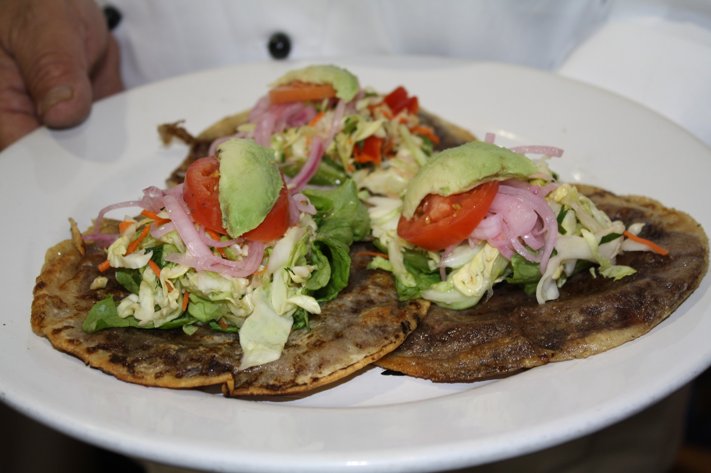

Los panuchos son un platillo tradicional de Yucatán, hechos con tortillas rellenas de frijol y fritas, acompañadas de pollo o carne, lechuga, tomate y cebolla morada.

Los panuchos son un platillo tradicional de Yucatán, hechos con tortillas rellenas de frijol y fritas, acompañadas de pollo o carne, lechuga, tomate y cebolla morada.
$25 MXN